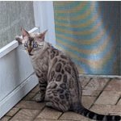

Это страница с котьими мемесами
It's CatMemes Page
Change user
Котомемчики это лучший сорт мемов человечества ведь У НАС ЕСТЬ:
Всратые мордочки
Высунутые язычки
Костюмчики
Спасибо что воспользовались тестовым сайтом котомемов, мемы без котов не мемы, а просто картинки, поэтому очень важно уделять внимание котикам и всякие прочие ага да